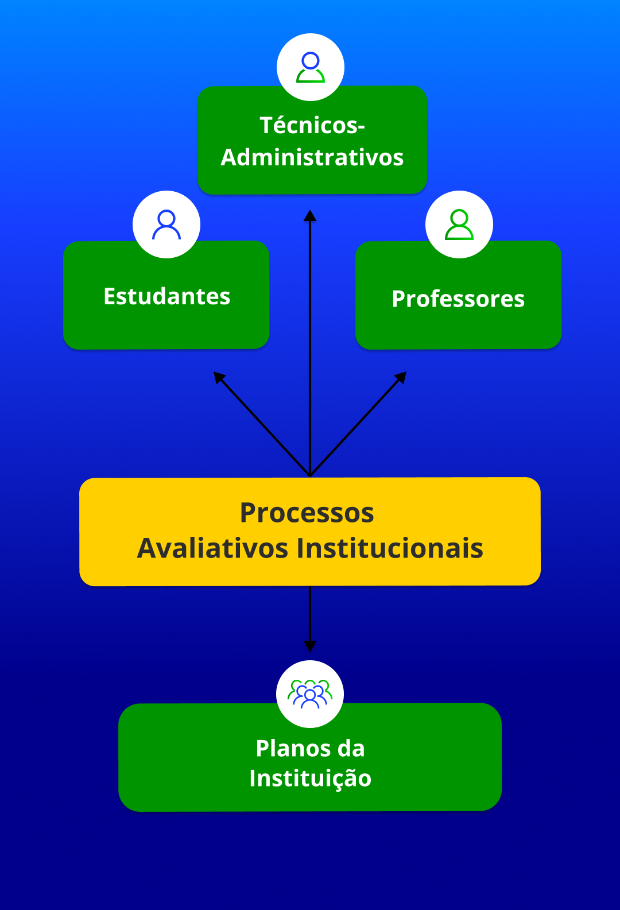

CAPÍTULO 1
A Indissociabilidade entre Planejamento e Avaliação Institucional
.png)
Não tenho um caminho novo. O que eu tenho de novo é um jeito de caminhar.
(Thiago de Melo)
Este capítulo tem como objetivo refletir sobre a indissociabilidade entre planejamento e avaliação institucional através do planejamento participativo e da gestão democrática nas instituições educativas. A abordagem parte do entendimento de que é possível superar a cultura histórica e autoritária, baseada em relações verticais de poder e orientada por concepções gerencialistas empresariais. Essas práticas têm sido fundamentadas pela lógica da educação meritocrática e balizadas pela utilização das avaliações de desempenho em larga escala, patrocinadas por organismos internacionais, como a Organização para a Cooperação e Desenvolvimento Econômico (OCDE) e o Banco Interamericano de Desenvolvimento (BID).
Planejamento e avaliação institucional precisam ser processos participativos, dialógicos e indissociáveis, pois um complementa o outro, contribuindo para a construção de uma gestão democrática e de práticas pedagógicas emancipatórias. Enquanto o planejamento estrutura os caminhos a serem trilhados coletivamente, a avaliação atua como uma mediação significativa, acompanhando o processo de construção do conhecimento e auxiliando a estruturação de novas aprendizagens, sendo essas de fundamental importância para o desenvolvimento pessoal e social dos sujeitos envolvidos no processo educativo.
Os processos de planejamento e avaliação estão diretamente relacionados à melhoria da qualidade da educação básica e superior. Da mesma forma, o planejamento não deve ser uma ferramenta de controle, de cobrança ou de responsabilização individual ou setorial, mas um processo que mobiliza todos os atores a participarem. "Os processos avaliativos institucionais devem gerar estímulo, servir de alavanca, servir à mudança e à transformação, e não serem utilizados para rebaixamento de autoestima, seletividade, punição, diminuição de valia", adverte(2000, p. 94).
A indissociabilidade implica a superação necessária de concepções e de modelos de gestão alicerçados apenas na visão de especialistas em planejamento e avaliação, em detrimento da participação de toda a comunidade acadêmica e escolar. É fundamental compreender e reforçar a compreensão ético-político-social conferida à educação e ao processo de produção de conhecimentos e saberes. Ainda, é preciso partir do pressuposto de que todas as instituições de ensino são instituições sociais cuja principal finalidade deve ser a formação humana integral e cidadã. Para tanto, elas não podem se eximir de promover as três dimensões sociais do desenvolvimento humano: epistemológica, política e ética.
A perspectiva da educação humana integral se orienta para a emancipação dos sujeitos, compreendendo os estudantes enquanto atores sociais na dialética da relação educacional, mesclando a formação entre habilidades técnicas e conhecimentos gerais para a transformação social.
A indissociabilidade carrega consigo a potência de gerar movimentos de articulação, de integração, de participação, de produção e de socialização do conhecimento, ao relacionar dialeticamente os processos sociais com os fins formativos de uma educação humana integral. A concretização desse princípio supõe a realização de projetos coletivos de trabalho, baseados no planejamento participativo, nas ações institucionais e na avaliação, levando em consideração os interesses da maioria da comunidade escolar.
Nessa perspectiva de planejamento participativo e de avaliação institucional sistemática, é preciso construir e correlacionar uma série de determinantes que precisam estar ao alcance de todos, por meio de um Projeto Pedagógico Institucional (PPI), no qual se definem:
- a visão de humanidade e de profissional que se pretende formar;
- a função social da instituição formadora;
- a visão de ensinar e de apreender;
- a visão de ciência, conhecimento e saber escolar;
- a organização curricular, com a utilização de objetivos interdisciplinares (módulos, ações, eixos, problemas, projetos etc.);
- o compromisso com uma formação integral dos estudantes enquanto sujeitos de direitos.
Não há modelo único de planejamento nem de avaliações. Para José Dias Sobrinho (2002), estes devem ser confiáveis e justos, tanto técnica quanto eticamente, cumprindo os requisitos da equidade, tais como: ausência de coerção, construção de garantias de respeito aos sentidos produzidos socialmente, liberdade de expressão, participação e, sobretudo, contribuição para a justiça social, opondo-se à desigualdade e à exclusão. Devemos entender avaliação como um processo de construção guiado pelo princípio orientador de que a técnica deve submeter-se à dimensão da ética, e não o contrário: a técnica na avaliação é indispensável, contudo a ética deve proceder e orientar todo o processo, bem como a finalidade da avaliação.
Nessa perspectiva, os processos avaliativos institucionais não devem restringir-se somente aos estudantes (desempenho e empregabilidade) e aos professores e técnicos administrativos, mas ao conjunto da instituição e à totalidade de seus planos e processos, como o Plano de Desenvolvimento Institucional (PDI), o PPI e a gestão administrativa e financeira, incluindo as mantenedoras e as políticas propostas ou impostas.

Título: Atores dos Processos Avaliativos Institucionais
Fonte: Prosa (2024b).